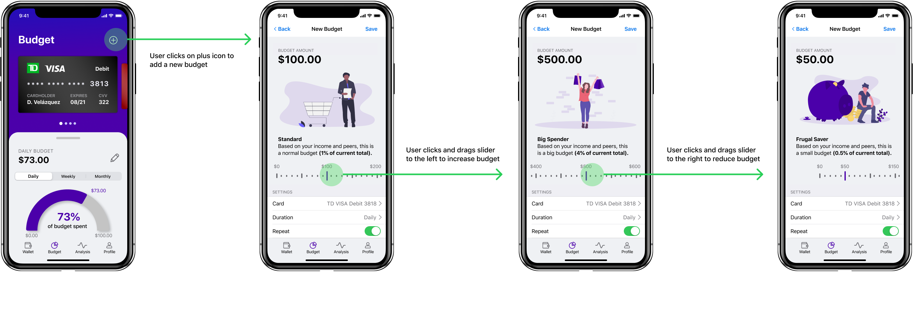
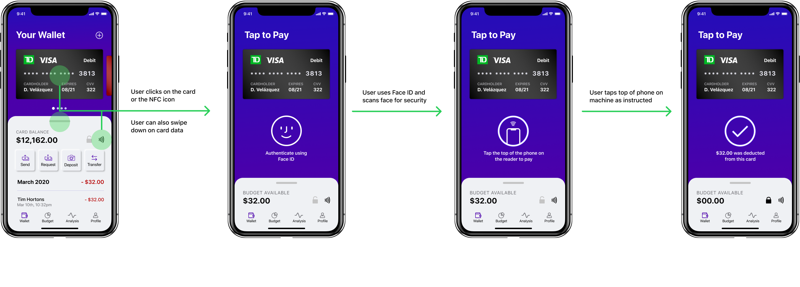
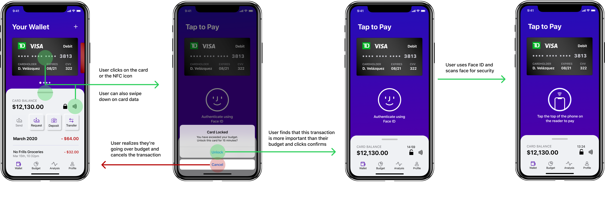
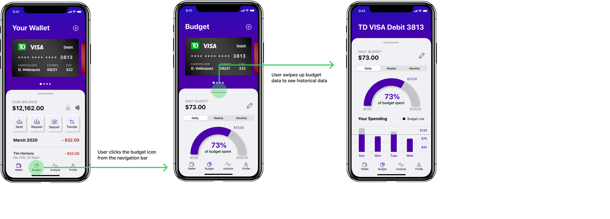
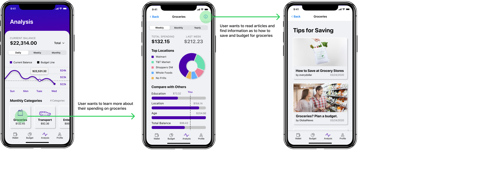

A budget and payments application that helps users manage their financials in an efficient and automatic way.
Budgeting and conscious spending are integral to the success of financial management, especially among a younger user group.
By designing an application that integrates financial analysis, budget-making, and spending, we can empower users to save money.
According to preliminary interviews with five peers, financial planning applications give a sense of productivity but didn’t actually help users save on money. Users tended to forget about and failed to adhere to budgets because of poor integration of planning applications and payment processes.
Initial Research
I conducted exploratory interviews with five peers. Several key findings informed my design process:
After ideating and sketching possible solutions, I created a mid-fidelity prototype and solicited design critiques from several other designers. Taking their feedback into consideration, I completed higher-fidelity mockups.
Adding a New Budget
As part of budgeting, the solution can help users identify whether a budget is reasonable in comparison to peers as well as their regular income. Users can set budgets for each of their cards, indicate the basis, and set the budget on repeat.
Integrating Budgets in Spending
As previous interviews suggested, users had difficulty remembering their budgets when spending. By integrating budgets in NFC pay, users can see how much they can spend in their budget automatically.
When users are over their budget, the application locks their card so future spending is halted. Users can unlock their card at 15 minute intervals every day for emergency usage. This helps users be more aware of unnecessary spending.
Monitoring Budget Progress
Users can track their progress on a daily, monthly, and weekly basis. These visualizations help users understand their budgets in relation to their spending and can empower them to save more money throughout the indicated basis.
Analyzing Spending and Savings
Aside from analyzing their budgets, users can see a breakdown of their spending categories in comparison with others. In this way, users can be informed as to how they can save their money through tips and staying informed.
By trying this design exercise, I wanted to apply leaner principles to my traditional design process. However, I didn't want to undermine the importance of good fundamental research and empathy building with users to inform good design. Moreover, ideation sessions proved that effective solutions didn't need to be revolutionary - sometimes the most effective solutions are the simplest. Finally, I was able to practice my UI design skills by studying and applying an existing design system, namely iOS Human Interface Guidelines, as well as experimenting with neumorphic patterns.